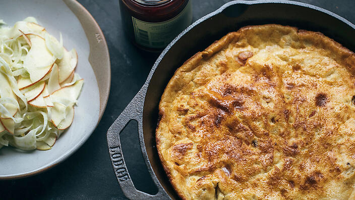

Savoury Oven Pancake With Lingonberry Jam

This dish was a classic we learned to cook at an early age. As I’ve grown older, I have tweaked the original recipe a little for nostalgic Scandinavian effect.
SERVES - 4 people
PREPARATION - 10 mins
COOKING - 30 mins
SKILL LEVEL - EASY
Growing up in a family with 4 kids and hard - working parents, my mother was a shift working cardiology nurse and there wasn’t always heaps of time to spend cooking.
Ingredients:
- 350g good-quality rindless bacon, diced
- 2 fennel bulbs
- 2 red apples
- ½ lemon, juice
- 1 tbsp extra-virgin olive oil
- sea salt, to season
- lingonberry jam, to serve
Batter
- ½ tsp salt
- 4 large eggs
- 800ml buttermilk
- 105g plain flour
- 105g rye flour
Instructions
- Preheat the oven to 220°C. Place the bacon in a baking dish and roast for 5-10 minutes or until golden.
- Meanwhile, for the batter, place all the ingredients in a bowl and whisk until smooth.
- When the bacon is golden, remove the dish from the oven, pour the batter over the top and bake for about 20 minutes or until golden. Stand for 5 minutes.
This recipe was first seen HERE